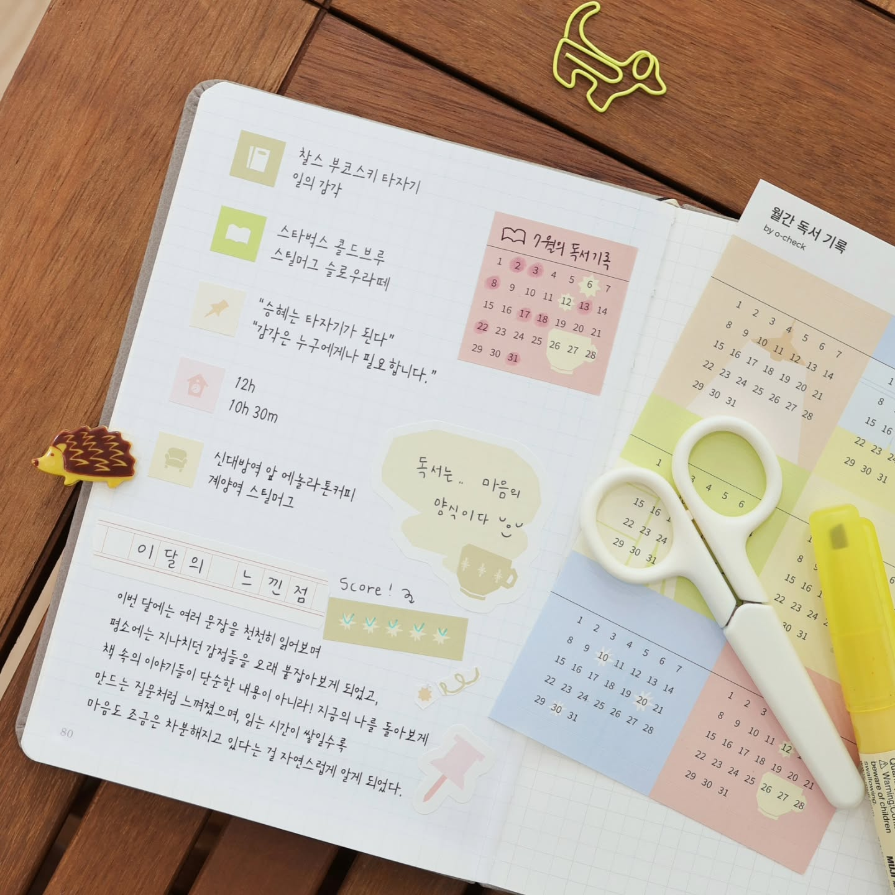
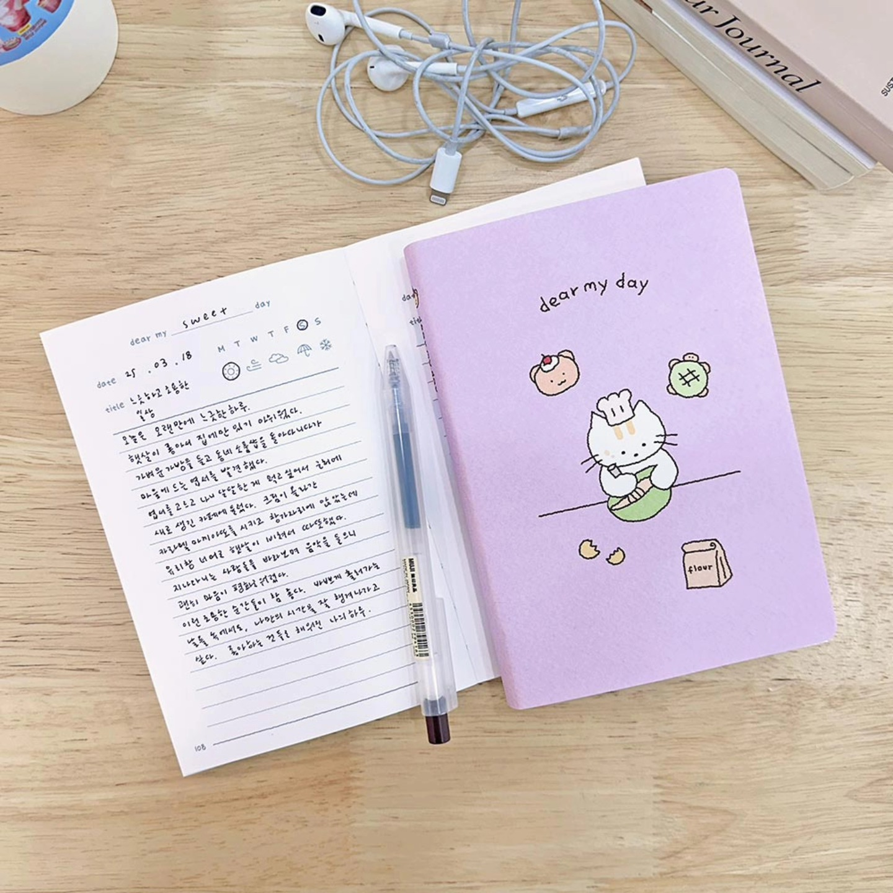

一个让人想开始记录生活的品牌
第一次注意到 O-CHECK，是因为它的设计给人一种安静的感觉。
它没有大量使用鲜艳颜色，也没有复杂的装饰。
相反，它使用柔和的色彩、简洁的排版， 以及带有复古气息的设计元素， 创造出温暖而舒服的视觉体验。
O-CHECK 的插画和贴纸并不是为了把手帐装饰得更丰富， 而是让记录这件事，多了一点期待， 也多了一点属于自己的风格。
它特别在哪里？
① 让记录变成一种生活仪式

很多人买手帐，是为了规划时间。
但 O-CHECK 更像是在鼓励：
保存生活里的小瞬间。
可能是一张照片。
一张旅行时留下的车票。
一张朋友写给你的卡片。
一句突然想到的话。
又或者，只是一杯下午的咖啡。
当你重新翻开过去写下的每一页， 也会重新遇见那个时期的自己。 那些曾经觉得平凡的日子， 往往会在多年后，成为最珍贵的回忆。
② 简单设计，却有长期使用的魅力

从一些韩国使用者的分享中， 可以看到他们关注的不只是 O-CHECK 的外观， 也包括纸品在日常使用中的感觉。
相册适合保存照片； 月历轻巧、容易携带； 收纳用品则兼顾了简洁设计与实用性。
轻巧、方便携带的笔记本， 让你在喝咖啡的时候、搭地铁的时候， 或是等待巴士的时候， 只要灵感突然出现，就能立刻把它写下来。
Why Soft Archive Collects It
现在很多东西追求快速、方便。
但 O-CHECK 提醒我们：
并不是为了让生活更有效率。
而是让我们愿意慢一点，
看见那些原本容易忽略的日常。
一本手帐。
一张照片。
一段文字。
当它们被时间保存下来， 也慢慢成为了我们认识自己的方式。
这些微小的记录， 最后都会成为属于自己的记忆。
A Small Detail I Love
它只是安静地留下一页空白， 等待属于你的故事慢慢出现。
What Caught My Attention
- 官方摄影经常使用木桌、自然光与柔和的色调。
- 相册、贴纸和笔记本经常出现在生活感较强的场景里， 而不是只有单纯的商品展示。
- 插画简单，却保留了大量留白， 让人想慢慢记录生活。
- 整体视觉不会过度强调产品， 反而让人注意到记录本身。
O-CHECK Photo Album
一本为了长期保存回忆而设计的相册。 厚实的纸张与耐用的材质， 让每一次翻阅，都像重新回到那些曾经发生过的日子。
Theme
Record | 记录
Theme Color
Warm Beige
Archive Information
| Country | Korea |
| Location | Seoul |
| Founded | 2000 |
| Category | Stationery |
| Materials | Paper Goods |
Who It’s For
📒 喜欢手帐与纸品的人
☁️ 喜欢温柔、简约设计的人
📷 喜欢记录日常的人
💛 想收藏生活回忆的人
「值得收藏的，不一定是最特别的东西， 而是那些让普通日子变得更有温度的东西。 因为平凡的瞬间，也值得被珍藏。」
Sources
This archive is an independent editorial project by Soft Archive. Product names, trademarks and images belong to their respective owners. Soft Archive is not affiliated with O-CHECK.